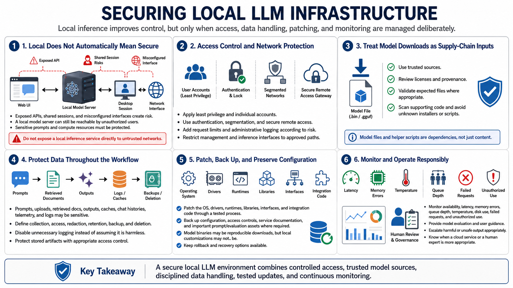

Security, Privacy, and Operations
Connecting to LMS... Progress: in progress

Narration
Local does not automatically mean secure. A model server bound to the wrong network interface, an unauthenticated API, a shared desktop session, or an exposed web interface can make sensitive prompts and compute available to unauthorized users.
Apply least privilege, individual accounts, authentication, network segmentation, secure remote access, request limits, and administrative logging according to risk. Do not expose a local inference service directly to untrusted networks.
Handle model downloads as supply-chain inputs. Use trusted sources, review licenses and provenance, validate expected files where appropriate, scan supporting code, and avoid running unknown installers or model-specific scripts without review.
Prompts, retrieved documents, outputs, uploads, caches, chat histories, telemetry, and logs may contain sensitive data. Define collection, access, redaction, retention, backup, and deletion. Disable unnecessary logging rather than assuming it is harmless.
Patch the operating system, drivers, runtimes, interfaces, libraries, and integration code through a tested process. Back up configuration, prompts or evaluation assets where required, access controls, and service documentation. Models themselves may be reproducible downloads, but local customizations may not be.
Monitor availability, latency, memory errors, queue depth, temperature, disk, failed requests, and unauthorized use. Responsible operation also requires model evaluation, user guidance, escalation for harmful output, and a clear decision about when a cloud or human expert is more appropriate.